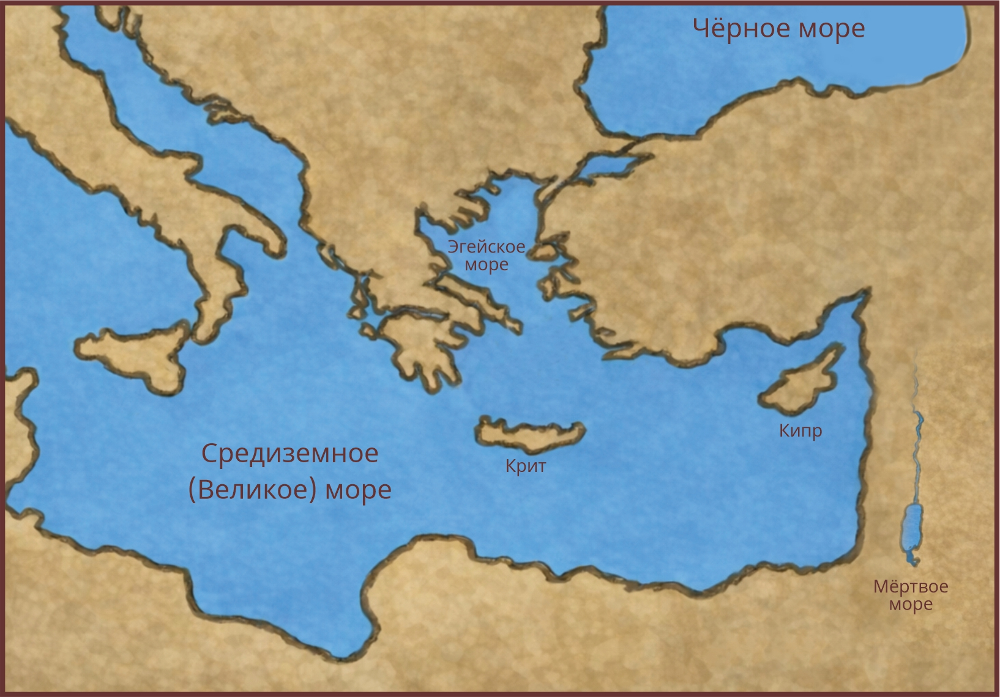

Антиохийская церковь послала Варнаву и Савла на служение. Так началось первое миссионерское путешествие апостола Павла.
Нажми на каждую точку на карте по порядку, чтобы узнать, что происходило в этом городе.
📖 Деяния 13:1-3
🏙️ Посещено городов: 0 из 8

🕊️ Путь пройден
Павел и Варнава прошли через Кипр и Галатию, проповедуя Евангелие. Многие уверовали, но были и гонения.
Главный урок: Бог ведёт Своих служителей и даёт силы даже в трудностях.
«А оттуда отплыли в Антиохию, откуда были преданы благодати Божией на дело, которое и исполнили. Прибыв туда и собрав церковь, они рассказали всё, что сотворил Бог с ними и как Он отверз дверь веры язычникам» — Деяния 14:26-27